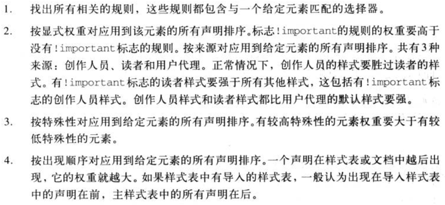
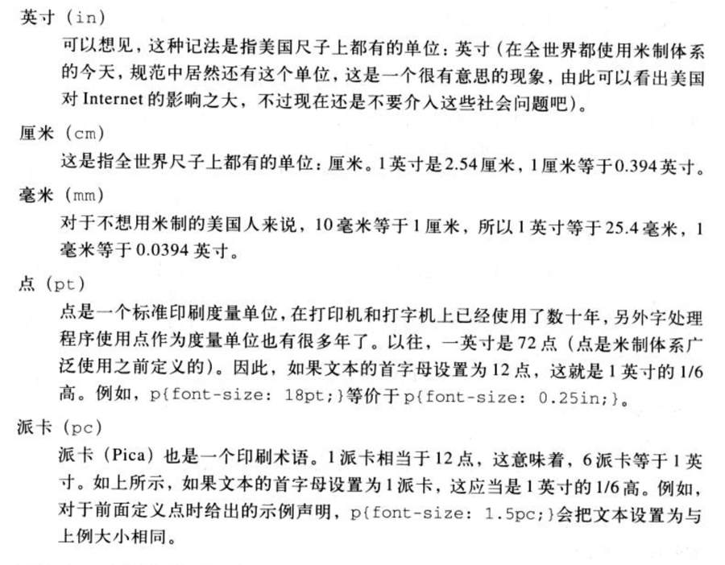

CSS备忘
1. 选择器的特殊性
如果一个元素有两个或多个冲突的属性声明，那么有最高特殊性的声明就会胜出。声明也分为重要声明（就是!important）和非重要声明。这两类声明解决冲突的规则入下：
- 对于重要声明就没有特殊性一说
- 非重要声明的解决冲突使用特殊性
- 重要声明与非重要声明发生冲突时，胜出的总是重要声明
非重要声明的特殊性由选择器本身确定。特殊性值表述为4个部分，如0，0，0，0.
- 对于内联样式特殊性加1，0，0，0；
- 对于ID选择器特殊性加0，1，0，0；
- 对于类选择器、伪类选择器、属性选择器特殊性加0，0，1，0；
- 对于元素选择器和伪元素选择器特殊性加0，0，0，1；
- 对于通配选择器的特殊性加0，0，0，0；（这个和没有特殊性不一样）
对于子元素从父元素继承来的值是没有特殊性的，因此通配选择器会覆盖继承来的值。
如果特殊性相同的两个规则同时应用到同一个元素，则按照声明的顺序进行排序，一个声明在文档中越后出现，权重越大。导入样式表的出现顺序一般认为出现在主样式表的前面。
以及按角色分为创作人员样式、读者样式和用户代理样式。其中用户代理样式的优先级最低。一般而言创作人员样式优先级最高，除了读者样式设置为!important的情况，这种情况就算是创作人员样式设置为!important都是比他弱的。
层叠规则如下：

2. 继承
css不可继承的属性有：大多数框模型属性（外边距、内边距、背景和边框）。
css可继承的属性有：颜色，文字，字体间距行高对齐方式，和列表的样式可以继承
所有元素可继承：visibility和cursor。
内联元素可继承：letter-spacing、word-spacing、white-space、line-height、color、font、font-family、font-size、font-style、font-variant、font-weight、text-decoration、text-transform、direction。
终端块状元素可继承：text-indent和text-align。
列表元素可继承：list-style、list-style-type、list-style-position、list-style-image。
3. 选择器的解析方向
从右到左，先拿到目标节点的描述，匹配到可能的节点后，查找父节点。而从左到右解析，先匹配上层元素，再一层层向下匹配，当匹配不到，需要回溯上一层重新匹配。结果显而易见了，众所周知，在 DOM 树中一个元素可能有若干子元素，如果每一个都去判断一下显然性能太差。而一个子元素只有一个父元素，所以找起来非常方便。
所以从右向左方式匹配节点的。这样做是为了减少无效匹配次数，从而匹配快、性能更优。
4. 盒模型
W3C标准盒模型和IE盒模型
水平方向盒模型是由margin-left、border-left、padding-left、content、padding-right、border-right、margin-right组成。
W3C标准盒模型width的宽度和高度分别是content的width和height
IE标准盒模型width的宽度和高度分别是content+padding+border的width和height
使用box-sizing来切换盒模型。Box-sizing:border-box就是IE盒模型，box-sizing:content-box就是W3C盒模型。
块级元素和行内元素
块级元素：div\p\form\table \header\footer \section\h1-6
行内元素：span\i\a\input\button\label\select
5. 颜色
颜色有几种表示方法：
- RGB
rgb有三原色，每种颜色的范围是0-255，百分比是0-100% - 16进制
将三个介于00-FF的十六进制连起来
6. 长度单位
绝对长度：in、cm、mm、pt、pc

相对长度单位：em、ex、rem、px
px像素（Pixel）。相对长度单位。像素px是相对于显示器屏幕分辨率而言的。
em是相对长度单位。相对于当前对象内文本的字体尺寸。元素不同则em的值也不同。如当前对行内文本的字体尺寸未被人为设置，则相对于浏览器的默认字体尺寸。(引自CSS2.0手册)
ex。相对于当前元素所用字体中小写x的高度。如果两段文本，font-size相同但是所用字体不同，则ex的值也可能不同。
rem。相对于字体font-size的大小，1rem=font-size
7. 字体
font-family：设置使用的字体类型。
font-weight：字体加粗。normal、bold、lighter、100、200…
font-size：百分比是相对于父元素的字体大小。font-size单位可以是所有的长度单位。
font-style：italic（斜体）、oblique（倾斜）、normal、inherit
font的前三个值是font-style，font-weight,font-variant这三个值的顺序随意、后两个值font-size/line-height、font-family则一定要以这个顺序
8. 文本属性
- text-indent
作用：用于首行缩进,针对块级元素。
值：length、百分数、inherit、number
百分数：相对于缩进元素父元素的宽度。即如果对一个div设置了这个属性，则百分数是相对于div的父元素。
继承：有 - text-align
作用：影响元素中文本行相互之间的对齐方式。
值：left、center、right、justify、inherit。left、center、right导致文本的左中右对齐；justify是两端对齐。
继承：有
作用于：块级元素 - line-height
作用：文本行基线之间的距离，而不是字体的大小，，确定了将各个元素框的高度增加或减少多少
值：normal、百分数、长度
normal：字体的1.2倍
百分数：相对于元素字体的大小
number：是一个缩放因子，用于解决font-size如果是百分比或者em为单位，会相对父元素的font-size计算出line-height然后由子元素继承，子元素从父元素继承line-height时，继承自父元素的line-height和子元素自身的font-size不匹配。使用缩放因子，子元素就继承的是这个因子而不是计算值，因此子元素再用这个因子计算出line-height的值。
应用：所有元素
块级元素应用：line-height定义了元素中文本基线之间的最小距离。因为是最小，所以文本基线的距离可能会比line-height的值大
替换元素应用：
继承：有
行间距：文本行之间超出字体大小的额外空间。line-height和font-size之差就是行间距
文本行、内容区和行内框
line-height的值定义行内框的大小；font-size定义内容区的大小；行内框-内容区的部分就是行间距；所有行内框的最高顶部和最低底部就是行框的范围。 - vertical-align
应用：行内元素和替换元素
值：baseline（默认）、sub、sup、bottom、text-bottom、top、text-top、middle、百分数、数值
baseline：一个元素的基线和父元素的基线对齐。如果是图像】输入框这一类的替换元素，则该元素的底部和父元素的基线对齐
sub：使一个元素变成下标，该元素的基线（或是替换元素的底部）会低于父元素的基线，低多少由用户代理决定。sup和sub相反
bottom：将元素行内框的底部和行框的底部对齐
text-bottom：将元素行内框的底端和行内文本框的底部对齐
middle：往往（但并不总是）应用于图片，middle将元素行内框的中点与父元素基线上的0.5ex对齐。
百分数：将元素的基线（或替换元素的底边）相对于父元素基线升高或降低指定的量。这个百分数是相对于该元素line-height的百分数。
总结：可以看到所有垂直对齐的元素都会影响行高。行框的描述是，高度要足以包含最高行内框的顶端和最低行内框的底端。
数值：
继承：无 - word-spacing
作用：增加或减少单词之间的间隔
值：normal、inherit、数值
应用：所有元素
继承：有 - letter-spacing
作用：增加或减少字母之间的间隔
值：normal、inherit、数值
应用：所有元素
继承：有 - text-transform
作用：处理文本大小写
值：uppercase、lowercase、capitalize、none、inherit
capitalize：对每个单词首字母大写
应用：所有元素
继承：有 - text-decoration
作用：文本装饰
值：none、underline、overline、line-through、blink
blink：文本闪烁
应用：所有元素
继承：无 - text-shadow
作用：文本阴影
值：三个（color、length[左右偏移]、length[上下偏移]、length[阴影模糊半径]）
应用：所有元素
继承：无 - white-space
作用：影响用户代理对源文档中的空格、换行和tab字符的处理
值：normal、nowrap、pre、pre-wrap、pre-line、inherit
pre：会保留空格，不换行
nowrap：不会保留空格，不换行
pre-wrap：会保留空格，换行
pre-line：不会保留空格，换行
应用：所有元素
继承：无
9. 基本视觉格式化
margin-left、width、margin-right可以设置为auto。
margin-left和width都为auto则margin-left是0，width尽可能大
margin-left、width、margin-right都是auto，则margin-left和margin-right都是0，width尽可能大。
margin、width、padding的百分数都是相比于父元素的width。边框没有百分数。
不可替换块级元素和可替换块级元素的区别是：前者当width为auto时，宽度是内容的固有宽度。后者width为auto，宽度就是元素的实际宽度，比如一张图片的实际宽度
在垂直方向，不可以通过设置margin-top margin-bottom的方式来
10. 居中
- 水平居中
块级元素：
设置width，margin-left和margin-right设置为auto。
行内元素和块级元素：
在父级元素上设置text-align:center
设置flex布局，justify-content设置为center - 垂直居中
- 行内元素：
单行：可以用line-height，让line-height=父元素的高度
多行：
.father{
display: table-cell;
width: 500px;
vertical-align: middle;
height: 500px;
}
.child{
white-space: wrap;
} - 行内元素和块级元素：
可以使用absolute和translate。
.father{
position: relative;
height: 600px;
}
.child{
position: absolute;
top: 50%;
transform: translateY(-50%);
}
可以使用flex
.father{
height: 600px;
display: flex;
align-items: center;
}
- 垂直水平居中
可以使用absolute和translate。
可以使用flex
11. 定位
根元素（html）的包含块由用户代理建立
非根元素，position是relative或static的元素，其包含块是最近的块级框、表单元格或行内块祖先框
非根元素，position是absolute的元素，包含块是最近的position值不为static的祖先元素
left和right的百分比相对于包含块的宽度；top和bottom的百分比相对于包含块的高度
12. float
浮动元素的包含块就是最近的块级祖先元素
12. padding和margin
左右上下padding、左右上下margin的值如果是百分比，都是相对于父元素的宽度来计算的
13. 去除行内块元素的间隙
- 在父元素上设置font-size为0
- 在父元素上设置letter-spacing和word-spacing为-6左右
14. 两个垂直块元素边距塌陷的条件有：
- 这两个在同一个BFC中
- 这两个没有padding、border、内联元素分离它们
15. box-shadow
三个（color、length[左右偏移]、length[上下偏移]、length[阴影模糊半径,值越大阴影越大，越模糊（可选）]、length[阴影半径,值越大阴影越大，不会模糊（可选）]、颜色）
16. 浮动元素内幕
首先需要建立包含块的概念。浮动元素的包含块是其最近的块级祖先元素。一个元素无论之前是行内元素还是块级元素，在浮动了之后都是成为一个块级框，它会像块级元素一样摆放和表现。
浮动元素的左（或右）外边界不能超出其包含块的左（或右）padding边界，浮动元素的上（或下）外边界不能超出其包含块的左（或右）padding边界。这一点和absolute元素不一样，absolute元素是不能超出其父元素的border边界。（比如说不能超出其包含块的左padding边界，意思是浮动元素不能进入padding范围内，就是不包括padding）
浮动元素的左（或右）外边界必须是源文档中之前出现的左浮动（或右浮动）元素的右（左）外边界，除非后出现的浮动元素的顶端在先出现浮动元素的底端下面。
17. 包含块
之前在浮动元素中就已经说了包含块的概念。
对于一个非根元素，如果其position值是relative或static，包含块则是由最近的块级框、表单元格或行内祖先框的内容边界构成。
对于一个非根元素，如果其position值是absolute，包含块是最近的position不是static的祖先元素。
- 如果这个祖先元素是块级元素，包含块则设置为该元素的内边距边界。
- 如果这个祖先元素是行内元素，包含块则设置为该祖先元素的内容边界。
一个框里横向排列三个块，怎样让这三个块的宽度均为包含块的1/3，尽量说出两种方法
- 使用flex
- 使用float，让三个元素都float
- 使用display: inline-block，并用font-size去除行内块元素的间隔